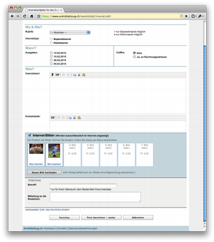

Blog
Grippe-Trends bei Google
Google hat festgestellt, dass die Häufigkeit bestimmter Suchbegriffe Anhaltspunkt für die Häufigkeit von Grippefällen sein kann. Für die Google Grippe-Trends werden Daten der Google-Suche gesammelt und ausgewertet.
Auf Grundlage der Ergebnisse wird anschliessend die Häufigkeit von Grippefällen geschätzt.
Handy soll Fussgänger vor Autos warnen
Ein japanisches Unternehmen hat den Prototypen eines Handys vorgestellt, dass die Verkehrssicherheit für Fußgänger erhöhen soll. Ermöglicht wird dies durch die Verbindung von GPS und DSRC. Die DSRC-Technologie kommt in Fahrzeugen zum Einsatz und dient unter anderem der Unfallvermeidung. GPS ist der Handy- Standart. Das Sicherheits-Handy soll nun den Fußgänger warnen, falls ihm ein Auto zu nahe kommt.
Über das DSRC-Modul registriert das Telefon alle Fahrzeuge in der Umgebung, die ebenfalls mit einem DSRC-Chip ausgerüstet sind. Dazu senden die Chips in regelmäßigen Intervallen Signale aus. Kommt ein Auto in einen zuvor um das Telefon festgelegten Bereich, so wird die Position beider und deren Abstand zueinander laufend überwacht. Mithilfe von GPS-Daten wird die Geschwindigkeit gemessen, mit der sich der Handybesitzer und die erfassten Autos aufeinander zubewegen und eine Unfallwahrscheinlichkeit errechnet. Sobald der Fußgänger einem Wagen zu nahe kommt, wird er durch einen Vibrationsalarm beziehungsweise durch eine Meldung gewarnt.
"80 Prozent der Bevölkerung in Japan besitzen ein Mobiltelefon. Unser Ziel ist es, mit Handys die Sicherheit von besonders gefährdeten Verkehrsteilnehmern wie Fußgänger oder Radfahrer zu erhöhen", sagt Masao Miyashita, Verantwortlicher für System Solutions im Konzern. "Wir werden unsere Produkte in enger Kooperation mit den Automobilherstellern entwickeln."
Handy-Vorwahl 077
Fast wie in alten (NATEL-C-)Zeiten! Die Mobiltelefonvorwahl 077 ist wieder ausgegraben worden. Wenn also auf dem Telefondisplay eine 077-Nummer erscheint, ist das kein unerwünschter Zeitsprung in längst vergangene NATEL- Zeiten, sondern ein Zeitgenosse mit einem "m-budget"-Abonnent!
Ausgerechnet die Migros hat für ihr "m-budget-mobile" die historische Vorwahl gewählt (oder wohl eher gewählt bekommen...).
Image upload panel
We just released a project including a nice image upload panel. The approach allows to upload images in a very convenient way.

upload images in jpg, png or gif format
file size limit
- resize the image
- ajax upload: page is not reloaded
- change oder of images by drag and drop
- delete uploaded images
- works in all browsers
Technical background
- grok based web application
- PIL (Python Image Libary) for the image resizing
- AJAX Upload
- JQuery UI for drag and drop
Import- / Export-Funktionalitäten in Plone
Zope/Plone lassen sich dank der umfangreichen Funktionalitäten gut als DMS einsetzen. Eine zentrale Anfordung dabei sind Import- bez. Export- Funktionalitäten.
Dazu gibt es in Plone unterschiedliche Ansätze:
- WebDAV
- Plone Desktop1
- Export als Zip-File
- Import von Zip-Files
Bei all den technischen Möglichkeiten zum schnellen Upload grösser Mengen an Inhalten - wie bespielsweise Bilder - sollte jedoch darauf geachtet werden, dass die entsprechenden Inhalte in jedem Falle noch zu klassifizieren sind. So kann sichergestellt werden, dass sich beispielsweise Bilder im Portal über die Suche finden lassen.
Plone WebDAV http://plone.org/documentation/faq/webdav-ftp/
PloneFilesZip http://plone.org/products/plonefileszip/
MassLoader http://plone.org/products/massloader/
1 nicht open Source, sondern unter einer kommerziellen Lizenz bei Enfold erhältlich: http://www.enfoldsystems.com/Products/Desktop